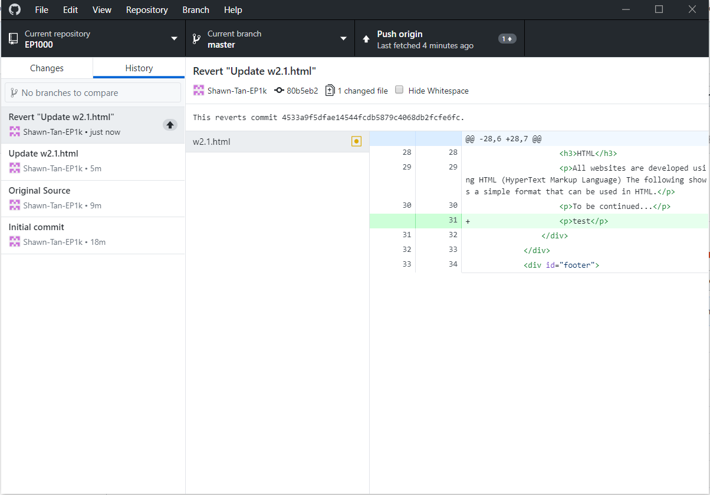

Project Management
Revert changes using Github desktop
As part of the version control assignment, we were supposed to make a paragraph, delete said paragraph and undo the delete through GitHub desktop and retrieve that paragraph back.
In the image above, I deleted a paragraph "test", commited it to master, and pushed it to origin
In this next image we can see the update has been made when we look at the History section. To revert the changes, I right clicked "Update w2.1html" and clicked revert changes.
Which will lead to the revert as seen on this image above